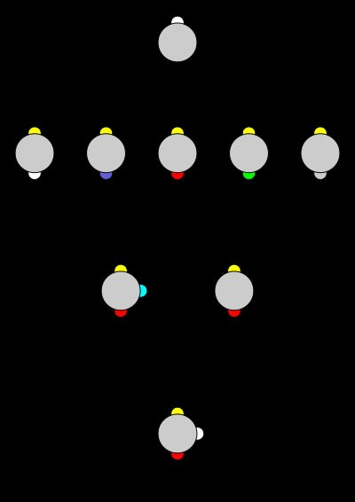
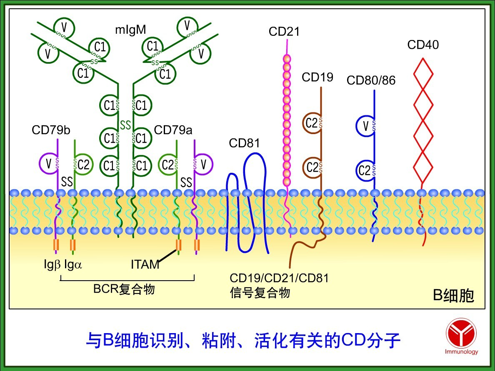
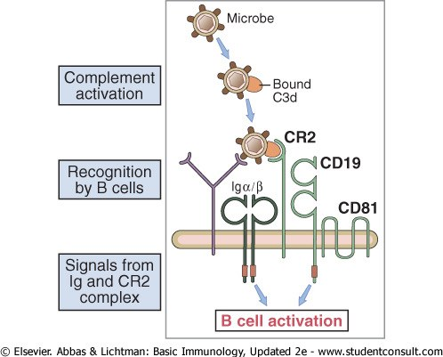
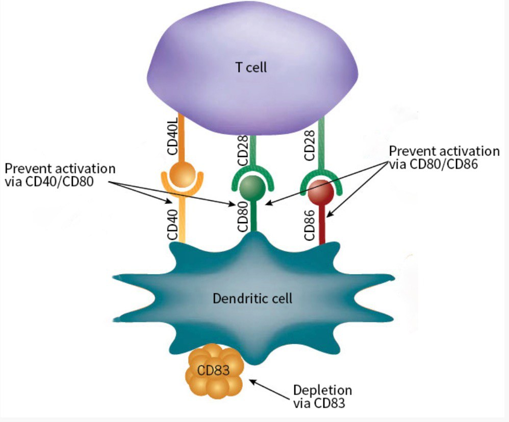
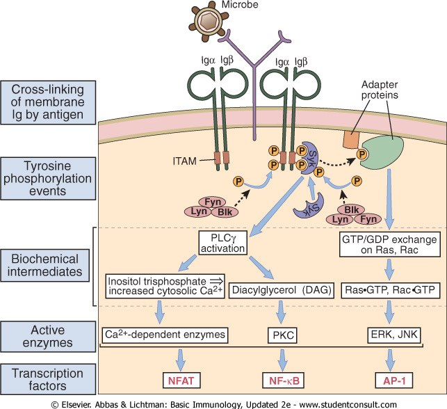
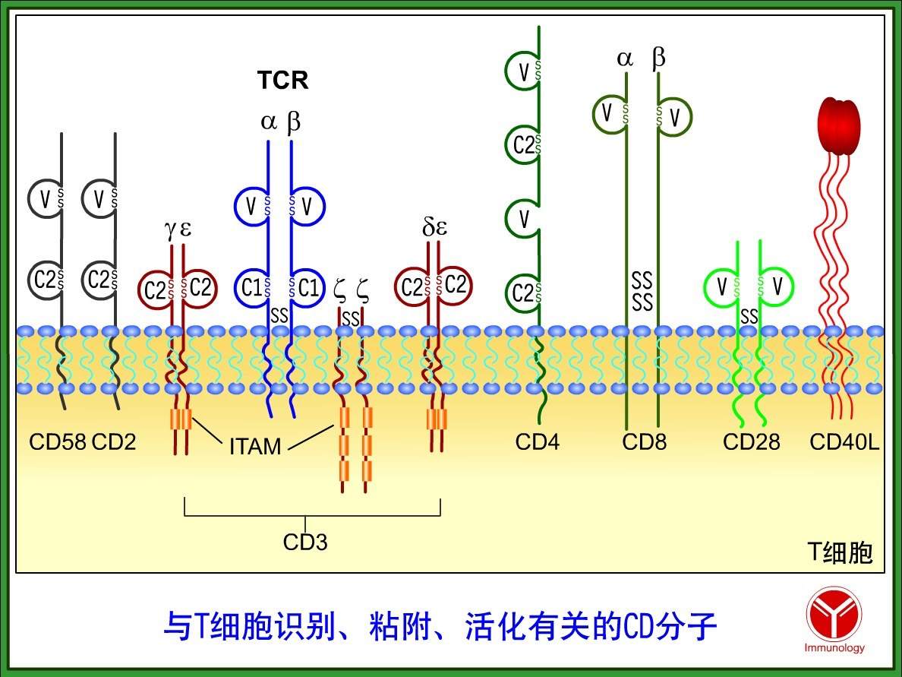
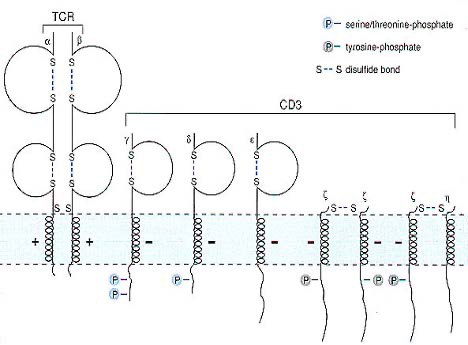
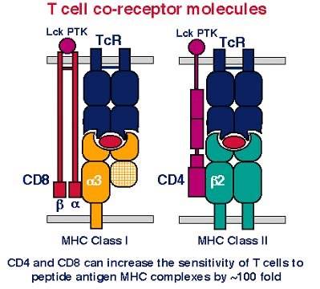

CD Molecules — the Vocabulary of the Cell Surfaceمولکولهای CD — واژگان سطح سلول
A leukocyte's surface is not a label; it is a sentence about what that cell is doing right now. Molecules appear when the cell is activated and disappear when it rests, which is exactly why we can read them. This Part gives you the reading system: what a CD number actually means, which molecule pairs with which, and — most importantly — the alias table, because the commonest reason this topic feels impossible is that one molecule has four names.سطح یک لکوسیت برچسب نیست؛ جملهای است دربارهٔ اینکه آن سلول همین حالا چه میکند. مولکولها با فعالشدن سلول پدیدار و با استراحتش ناپدید میشوند، و دقیقاً به همین دلیل میتوانیم آنها را بخوانیم. این بخش سامانهٔ خواندن را به شما میدهد: یک شمارهٔ CD واقعاً یعنی چه، کدام مولکول با کدام جفت میشود، و — مهمتر از همه — جدول نامهای بدل، چون شایعترین دلیل ناممکن بهنظر رسیدن این مبحث آن است که یک مولکول چهار نام دارد.
By the end of this Part you should be able toدر پایان این بخش باید بتوانید
Define a leukocyte differentiation antigen and say why the definition contains the word “differentiation”.آنتیژن تمایزی لکوسیت را تعریف کنید و بگویید چرا واژهٔ «تمایز» در تعریف آمده است.
Explain what a CD number is assigned to — and why it is defined by antibodies rather than by structure.توضیح دهید شمارهٔ CD به چه چیزی داده میشود — و چرا با آنتیبادی تعریف میشود نه با ساختار.
Translate between CD numbers and functional names in both directions.میان شمارههای CD و نامهای کارکردی، در هر دو جهت ترجمه کنید.
Name the partner of every surface molecule in this Part, and which cell each sits on.شریکِ هر مولکول سطحی این بخش را نام ببرید و بگویید هر یک روی کدام سلول است.
Explain why neither the BCR nor the TCR can signal on its own.توضیح دهید چرا نه BCR و نه TCR بهتنهایی نمیتوانند پیام بفرستند.
Leukocyte differentiation antigens (LDAs) are cell-surface molecules that may appear or disappear on the cell membrane during different stages of leukocyte differentiation and activation.آنتیژنهای تمایزی لکوسیتمولکولهای سطح سلولاند که در مراحل مختلف تمایز و فعالسازی لکوسیت ممکن است روی غشا پدیدار یا ناپدید شوند.
Read the definition again — the important word is “may”تعریف را دوباره بخوانید — واژهٔ مهم «ممکن است» است
A surface molecule is not a permanent name tag. It is expressed conditionally, and that conditionality is the entire diagnostic value of the system. If CD25 were always present on T cells it would tell you nothing; because it appears only after activation, its presence tells you the cell has been activated. The same logic runs through this whole topic: CTLA-4 is induced only after the TCR has fired (§2.2), NLRP3 is induced only after a PRR has fired (§7.2). In immunology, “when is it there?” is usually a more useful question than “what is it?”.یک مولکول سطحی، برچسب نام دائمی نیست. مشروط بیان میشود، و همین مشروطبودن، تمام ارزش تشخیصی این سامانه است. اگر CD25 همیشه روی سلولهای T بود، هیچ نمیگفت؛ چون فقط پس از فعالسازی پدیدار میشود، حضورش میگوید که سلول فعال شده است. همین منطق در سراسر این مبحث جاری است: CTLA-4 فقط پس از شلیک TCR القا میشود (بخش ۲.۲)، NLRP3 فقط پس از شلیک یک گیرندهٔ شناساگر الگو القا میشود (بخش ۷.۲). در ایمونولوژی، «کی هست؟» معمولاً پرسش سودمندتری است از «چیست؟».
Two qualifications the slide makesدو قید که اسلاید میگذارد
They are not confined to leukocytes. The same molecules are found on erythrocytes, endothelial cells and epithelial cells. The name is historical — they were found on leukocytes — and the naming system has simply been kept as it expanded. Do not assume a CD number means “white cell”.محدود به لکوسیتها نیستند. همین مولکولها روی گلبول قرمز، سلول اندوتلیال و سلول اپیتلیال هم یافت میشوند. نام، تاریخی است — نخست روی لکوسیتها یافت شدند — و سامانهٔ نامگذاری با گسترشش صرفاً حفظ شده است. فرض نکنید شمارهٔ CD یعنی «گلبول سفید».
They are classified two different ways, and both are used. By function — costimulation, chemotaxis, cell adhesion, complement fixation. By structure — the immunoglobulin superfamily, the TNF superfamily, the C-type lectins, the integrins. A question may come from either direction, so learn at least one family membership for each major molecule.به دو شیوهٔ متفاوت ردهبندی میشوند و هر دو بهکار میروند. بر پایهٔ عملکرد — همتحریکی، کموتاکسی، چسبندگی سلولی، تثبیت کمپلمان. بر پایهٔ ساختار — اَبَرخانوادهٔ ایمونوگلوبولین، اَبَرخانوادهٔ TNF، لکتینهای نوع C، اینتگرینها. سؤال ممکن است از هر دو سو بیاید، پس دستکم یک عضویت خانوادگی برای هر مولکول مهم بیاموزید.
1.2What “CD” Means — and the Alias Decoder«CD» یعنی چه — و رمزگشای نام

Fig 1.1 The idea in one picture: cells that look alike are told apart by the combination of surface molecules they carry. No single CD identifies a cell; a pattern does.ایده در یک تصویر: سلولهایی که شبیه هم بهنظر میرسند با ترکیب مولکولهای سطحیشان از هم تمیز داده میشوند. هیچ CD واحدی سلول را نمیشناساند؛ یک الگو این کار را میکند.
Definitionتعریف
A cluster of differentiation (CD) is the label given to a membrane molecule that is recognised by a particular cluster of monoclonal antibodies. When monoclonal antibodies raised in different laboratories all turn out to react with the same membrane molecule, they are grouped together as one cluster, and that cluster receives a number.خوشهٔ تمایز برچسبی است که به مولکول غشایی داده میشود که خوشهٔ معیّنی از آنتیبادیهای مونوکلونال آن را میشناسند. وقتی معلوم شود آنتیبادیهای مونوکلونالِ ساختهشده در آزمایشگاههای مختلف همگی با یک مولکول غشایی واکنش میدهند، در یک خوشه گرد هم میآیند و آن خوشه شماره میگیرد.
Exam Trap — the cluster is a cluster of antibodies, not of moleculesدام امتحانی — خوشه، خوشهای از آنتیبادیهاست نه از مولکولها
Almost everyone first reads “cluster of differentiation” as though a group of related molecules shared a number. They do not. One CD number = one membrane molecule; the cluster is the set of antibodies that all hit it. The definition is therefore operational — it says how the molecule was detected, not what it is or what it does. That is why a CD number tells you nothing about function on its own, and why the alias table below exists at all.تقریباً همه در نگاه اول «خوشهٔ تمایز» را چنان میخوانند که گویی گروهی از مولکولهای مرتبط یک شماره دارند. چنین نیست. هر شمارهٔ CD = یک مولکول غشایی؛ خوشه، مجموعهٔ آنتیبادیهایی است که همگی به آن میخورند. پس تعریف عملیاتی است — میگوید مولکول چگونه کشف شد، نه اینکه چیست یا چه میکند. برای همین شمارهٔ CD بهتنهایی چیزی دربارهٔ عملکرد نمیگوید، و برای همین اصلاً جدول نامهای بدلِ زیر وجود دارد.
The direct consequence: this entire nomenclature exists because hybridoma technology exists. Without Köhler and Milstein's monoclonal antibodies there would be no clusters to count. The CD system is the most-used practical product of the technique you met in Session 2.پیامد مستقیم: تمام این نامگذاری به این سبب وجود دارد که فناوری هیبریدوما وجود دارد. بدون آنتیبادیهای مونوکلونال کوهلر و میلشتاین، خوشهای برای شمردن نبود. سامانهٔ CD پرکاربردترین فرآوردهٔ عملی همان تکنیکی است که در جلسهٔ ۲ دیدید.
Numbering runs CD1 to about CD350 in humans (≈350 as of the 2009 count quoted in the lecture; the list has continued to grow).شمارهگذاری در انسان از CD1 تا حدود CD350 است (حدود ۳۵۰ بر پایهٔ شمارش ۲۰۰۹ که در درس نقل شده؛ فهرست همچنان رشد کرده است).
A CD molecule may be a receptor or a cytokine held on the cell surface — CD256 (APRIL) and CD257 (BAFF) are cytokines that happen to have CD numbers.یک مولکول CD ممکن است گیرنده باشد یا سایتوکاینی که روی سطح سلول نگه داشته میشود — CD256 (APRIL) و CD257 (BAFF) سایتوکاینهاییاند که اتفاقاً شمارهٔ CD دارند.
Alias decoder — read this before anything elseرمزگشای نام — این را پیش از هر چیز بخوانید
CD3
TCR signalling complexکمپلکس پیامرسان TCR
γ δ ε ζ (η) chains; carries the ITAMs. The pan-T-cell markerزنجیرههای γ δ ε ζ (η)؛ حامل ITAMها. نشانگر عمومی سلول T
CD19
B-cell co-receptor subunitزیرواحد گیرندهٔ کمکی سلول B
The pan-B-cell marker; the target of CAR-T therapy in B-cell leukaemiaنشانگر عمومی سلول B؛ هدف درمان CAR-T در لوسمی سلول B
Four names, one molecule. You met it in Session 2 §6.3 as the link between complement and B-cell activation; Epstein–Barr virus uses the same doorچهار نام، یک مولکول. در جلسهٔ ۲ بخش ۶.۳ آن را بهعنوان پیوند کمپلمان و فعالسازی سلول B دیدید؛ ویروس اپشتین–بار از همین در استفاده میکند
CD25
IL-2Rαزنجیرهٔ α گیرندهٔ IL-2
The activation marker of T cells, and the third chain that converts an intermediate-affinity IL-2 receptor into a high-affinity one (§4.3)نشانگر فعالشدن سلول T، و زنجیرهٔ سومی که گیرندهٔ IL-2 با میل متوسط را به گیرندهٔ با میل بالا بدل میکند (بخش ۴.۳)
The erythrocyte immune-complex carrier of Session 2 §6.3, listed here as a myeloid CD moleculeحامل کمپلکس ایمنی روی گلبول قرمز از جلسهٔ ۲ بخش ۶.۳، که اینجا بهعنوان مولکول CD میلوئیدی فهرست شده
CD40L
CD154CD154
On the T cell. Its partner CD40 is on the B cell / APC. Mutation causes hyper-IgM syndromeروی سلول T. شریکش CD40 روی سلول B/عرضهکننده است. جهشش سندرم هایپر-IgM میدهد
CD80 / CD86
B7-1 / B7-2B7-1 / B7-2
On the APC. Both bind CD28 and CTLA-4. “B7” and “CD80/86” are used interchangeably in the same sentence, constantlyروی سلول عرضهکننده. هر دو به CD28 و CTLA-4 میچسبند. «B7» و «CD80/86» مدام در یک جمله بهجای هم بهکار میروند
CD152
CTLA-4CTLA-4
The brake. Almost always written CTLA-4, almost never CD152 — but the lecture slide uses the numberترمز. تقریباً همیشه CTLA-4 نوشته میشود و تقریباً هرگز CD152 — اما اسلاید درس از شماره استفاده میکند
CD64
FcγRI — high-affinity IgG receptorFcγRI — گیرندهٔ IgG با میل بالا
On macrophages. The receptor end of the opsonisation story from Session 2روی ماکروفاژها. سرِ گیرندهٔ داستان اپسونیزاسیون از جلسهٔ ۲
CD79a / CD79b
Igα / IgβIgα / Igβ
The signalling heterodimer of the BCR — the B-cell equivalent of CD3هتـرودایمر پیامرسان BCR — معادل CD3 در سلول B
TNF-family cytokines supporting B-cell survival. BAFF's receptor is BAFF-R = CD268سایتوکاینهای خانوادهٔ TNF که بقای سلول B را پشتیبانی میکنند. گیرندهٔ BAFF همان BAFF-R = CD268 است
How to use this table. Do not try to memorise it as pairs of strings. Instead, for each row, say the sentence the molecule belongs to. “CD21 is on the B cell; it binds C3d that complement has deposited on antigen; the result is that the B cell needs a thousand times less antigen to respond.” Once you can say that sentence, the four names of CD21 are just four ways to start it — and you will never again wonder whether CR2 and CD21 are two different molecules.چگونه از این جدول استفاده کنیم. نکوشید آن را بهصورت جفتهای رشتهای حفظ کنید. بهجایش، برای هر ردیف، جملهای را بگویید که مولکول به آن تعلق دارد. «CD21 روی سلول B است؛ به C3dی میچسبد که کمپلمان روی آنتیژن نشانده؛ نتیجه آن است که سلول B برای پاسخدادن به هزار برابر آنتیژن کمتری نیاز دارد.» همین که بتوانید این جمله را بگویید، چهار نام CD21 فقط چهار راه آغاز کردن آناند — و دیگر هرگز از خود نمیپرسید آیا CR2 و CD21 دو مولکول متفاوتاند.
1.3Lineage Markers: Reading a Cell from Its Surfaceنشانگرهای رده: خواندن سلول از روی سطحش
Table 1.1 The lecturer's table of major human CD molecules, by cell and by jobجدول ۱.۱ — جدول مدرّس از مولکولهای CD عمدهٔ انسانی، بر پایهٔ سلول و وظیفه
CD28 (the accelerator) · CD152 = CTLA-4 (the brake) · CD154 = CD40L (the help signal to B cells)CD28 (پدال گاز) · CD152 = CTLA-4 (ترمز) · CD154 = CD40L (سیگنال کمک به سلول B)
CD256 = APRIL · CD257 = BAFF — surface cytokines that keep B cells aliveCD256 = APRIL · CD257 = BAFF — سایتوکاینهای سطحی که سلول B را زنده نگه میدارند
Note on the slideیادداشتی دربارهٔ اسلاید
The lecture slide writes the BAFF receptor as “CD168 (BAFF-R)”. The BAFF receptor is CD268 (TNFRSF13C); CD168 is RHAMM, an unrelated hyaluronan receptor. If you are reproducing the slide, reproduce it; if you are answering a question about the BAFF receptor, the number is CD268. The biology the slide is teaching — that myeloid cells present BAFF and APRIL to keep B cells alive — is unaffected.اسلاید درس، گیرندهٔ BAFF را «CD168 (BAFF-R)» مینویسد. گیرندهٔ BAFF همان CD268 (TNFRSF13C) است؛ CD168 همان RHAMM است، گیرندهای بیارتباط برای هیالورونان. اگر اسلاید را بازتولید میکنید، همان را بنویسید؛ اگر به پرسشی دربارهٔ گیرندهٔ BAFF پاسخ میدهید، شماره CD268 است. زیستشناسیای که اسلاید میآموزد — اینکه سلولهای میلوئیدی BAFF و APRIL را عرضه میکنند تا سلول B زنده بماند — تغییری نمیکند.
Clinical Correlation — four CD numbers you will use on the wardsارتباط بالینی — چهار شمارهٔ CD که در بخش بهکار خواهید برد
CD4 count — the single number that stages HIV infection and predicts which opportunistic infection to expect.شمارش CD4 — تنها عددی که مرحلهٔ عفونت HIV را تعیین میکند و پیشبینی میکند چه عفونت فرصتطلبی را باید انتظار داشت.
CD20 — the target of rituximab. A B-cell marker present on mature B cells but not on plasma cells, which is exactly why anti-CD20 depletes B cells without abolishing existing antibody.CD20 — هدف ریتوکسیماب. نشانگری روی سلول B بالغ اما نه روی پلاسماسل، و دقیقاً به همین سبب ضد CD20 سلولهای B را تخلیه میکند بیآنکه آنتیبادی موجود را از بین ببرد.
CD19 — the target of CAR-T cells in refractory B-cell leukaemia and lymphoma.CD19 — هدف سلولهای CAR-T در لوسمی و لنفوم مقاوم سلول B.
CD3 — the immunohistochemical stain that says “this infiltrate is T cells”, used daily in histopathology.CD3 — رنگآمیزی ایمونوهیستوشیمی که میگوید «این ارتشاح، سلول T است»، و هر روز در هیستوپاتولوژی بهکار میرود.
1.4The B-Cell Set: BCR Complex and Co-receptorمجموعهٔ سلول B: کمپلکس BCR و گیرندهٔ کمکی

Fig 1.2 The B-cell surface. Left: the BCR complex — membrane IgM flanked by the Igα/Igβ (CD79a/CD79b) heterodimer carrying the ITAMs. Middle: the co-receptor complex CD19/CD21/CD81. Right: CD40 and CD80/86, the molecules by which the B cell talks to T cells.سطح سلول B. چپ: کمپلکس BCR — IgM غشایی در کنار هتـرودایمر Igα/Igβ (CD79a/CD79b) که ITAMها را حمل میکند. وسط: کمپلکس گیرندهٔ کمکیCD19/CD21/CD81. راست: CD40 و CD80/86، مولکولهایی که سلول B با آنها با سلولهای T سخن میگوید.
1.4.1 Why the BCR cannot signal by itselfچرا BCR بهتنهایی نمیتواند پیام بدهد
Membrane IgM has a cytoplasmic tail three amino acids long. There is physically nothing inside the cell for a kinase to act on. The receptor can bind antigen beautifully and tell the cell nothing at all. The solution is to bolt a separate signalling unit onto it.IgM غشایی دُمی سیتوپلاسمی بهطول سه اسیدآمینه دارد. فیزیکی هیچ چیزی درون سلول نیست که کیناز بتواند رویش کار کند. گیرنده میتواند آنتیژن را بهزیبایی ببندد و هیچ به سلول نگوید. راهحل، پیچکردن یک واحد پیامرسان جداگانه به آن است.
Complex 1 of 4BCR ＋ CD79a/CD79bBCR بهعلاوهٔ CD79a/CD79b
B cell — the antennaMembrane IgM (mIgM)IgM غشاییBinds antigen. Cytoplasmic tail 3 aa — cannot signalآنتیژن را میبندد. دُم سیتوپلاسمی ۳ اسیدآمینه — نمیتواند پیام بدهد
non-covalently associated with
B cell — the wireCD79a / CD79b = Igα / IgβCD79a / CD79b = Igα / IgβHeterodimer; long cytoplasmic tails containing ITAMsهتـرودایمر؛ دُمهای سیتوپلاسمی بلند حاوی ITAM
Result: antigen cross-links mIgM, the ITAMs of Igα/Igβ are phosphorylated by Lyn, Fyn and Blk, and the signal finally has somewhere to go. The BCR recognises; CD79 transmits.نتیجه: آنتیژن mIgM را شبکهای میکند، ITAMهای Igα/Igβ با Lyn، Fyn و Blk فسفریله میشوند و بالاخره پیام جایی برای رفتن دارد. BCR میشناسد؛ CD79 منتقل میکند.
ITAMITAM
Immunoreceptor tyrosine-based activation motif — a short cytoplasmic sequence with the consensus YxxL/V, repeated twice. Its two tyrosines are phosphorylated by Src-family kinases, and the doubly phosphorylated motif becomes a docking site for kinases carrying tandem SH2 domains: Syk in the B cell, ZAP-70 in the T cell.موتیف فعالسازی مبتنی بر تیروزینِ گیرندههای ایمنی — توالی کوتاه سیتوپلاسمی با الگوی YxxL/V که دو بار تکرار میشود. دو تیروزینش را کینازهای خانوادهٔ Src فسفریله میکنند و موتیف دوبارفسفریله به جایگاه اتصال برای کینازهای دارای دو دومین SH2 پشت سر هم بدل میشود: Syk در سلول B و ZAP-70 در سلول T.
Remember it asاینطور بهخاطر بسپارید
Antenna and wire. Every antigen receptor in the body is built the same way: a binding chain with no tail, bolted to a signalling chain with a long tail full of ITAMs. B cell: mIg + CD79a/b. T cell: TCR + CD3. If a question asks why anti-CD3 antibody activates T cells but anti-TCR-ligand does not, this is the answer — you are pulling on the wire, not the antenna.آنتن و سیم. هر گیرندهٔ آنتیژن در بدن به یک شکل ساخته شده: زنجیرهٔ اتصال بدون دُم، پیچشده به زنجیرهٔ پیامرسانِ دارای دُم بلندِ پر از ITAM. سلول B: mIg + CD79a/b. سلول T: TCR + CD3. اگر سؤالی بپرسد چرا آنتیبادی ضد CD3 سلول T را فعال میکند، پاسخ همین است — شما سیم را میکشید، نه آنتن را.
1.4.2 The co-receptor: CD19 / CD21 / CD81گیرندهٔ کمکی: CD19/CD21/CD81

Fig 1.3 Complement is activated on the microbe and leaves C3d bound to it. CR2 (CD21) grips that C3d while the BCR grips antigen on the same particle. Signals from the Ig complex and the CR2 complex arrive together, and the B cell is activated at far lower antigen concentrations.کمپلمان روی میکروب فعال میشود و C3d را متصل به آن باقی میگذارد. CR2 (CD21) همان C3d را میگیرد در حالی که BCR آنتیژن همان ذره را میگیرد. پیامهای کمپلکس ایمونوگلوبولین و کمپلکس CR2 با هم میرسند و سلول B در غلظتهای بسیار پایینتر آنتیژن فعال میشود.
Pair 2 of 4CD21 (CR2) ↔ C3d on antigenCD21 (CR2) ↔ C3d روی آنتیژن
B cell BCD21 = CR2CD21 = CR2with CD19 (the signalling subunit) and CD81همراه CD19 (زیرواحد پیامرسان) و CD81
binds
On the antigen itselfC3dC3dthe final breakdown product of C3b, left on the microbe by complementفرآوردهٔ نهایی تجزیهٔ C3b که کمپلمان روی میکروب باقی میگذارد
Result: the activation threshold of the B cell falls by up to 1000-fold. This is the molecular bridge between innate and adaptive immunity — complement, an innate system, decides how easily an adaptive response starts. Epstein–Barr virus exploits the same receptor to enter B cells, which is why EBV infects B lymphocytes specifically.نتیجه: آستانهٔ فعالسازی سلول B تا هزار برابر پایین میآید. این پل مولکولی میان ایمنی ذاتی و اکتسابی است — کمپلمان، که سامانهای ذاتی است، تعیین میکند پاسخ اکتسابی چقدر آسان آغاز شود. ویروس اپشتین–بار از همین گیرنده برای ورود به سلول B بهره میبرد، و به همین سبب EBV مشخصاً لنفوسیت B را آلوده میکند.
1.4.3 The two molecules by which B cells and T cells talkدو مولکولی که سلولهای B و T با آنها سخن میگویند
Pair 3 of 4CD40 ↔ CD40L (CD154)CD40 ↔ CD40L (CD154)
B cell / APC BAPCCD40CD40TNF-receptor superfamily; constitutively presentاَبَرخانوادهٔ گیرندهٔ TNF؛ بهطور ثابت حاضر
binds
T cell TCD40L = CD154CD40L = CD154TNF superfamily; induced on activated helper T cellsاَبَرخانوادهٔ TNF؛ روی سلول T کمکیِ فعالشده القا میشود
Result: the T cell delivers “help”. CD40 ligation drives the B cell into proliferation, class switching and germinal-centre formation. Loss of CD40L causes X-linked hyper-IgM syndrome: the patient makes IgM but cannot switch to IgG, IgA or IgE — the B cell is never told to.نتیجه: سلول T «کمک» را میرساند. اتصال CD40 سلول B را به تکثیر، تعویض کلاس و تشکیل مرکز زایا میراند. ازدسترفتن CD40Lسندرم هایپر-IgM وابسته به X میدهد: بیمار IgM میسازد اما نمیتواند به IgG، IgA یا IgE تعویض کند — هرگز به سلول B گفته نمیشود.

Fig 1.4 Seen from the other side: a dendritic cell presenting CD40, CD80 and CD86 upwards to a T cell. B cells display exactly the same set — a B cell is also an antigen-presenting cell, and that is why the two figures in this section are the same figure drawn from opposite ends.از سوی دیگر: سلول دندریتیکی که CD40، CD80 و CD86 را رو به بالا به سلول T عرضه میکند. سلول B دقیقاً همین مجموعه را نشان میدهد — سلول B خود یک سلول عرضهکنندهٔ آنتیژن هم هست، و به همین سبب دو شکل این بخش، یک شکلاند که از دو سو کشیده شدهاند.

Fig 1.5 The B-cell chain end to end. Cross-linking of membrane Ig → tyrosine phosphorylation of the ITAMs by Lyn, Fyn and Blk → PLCγ and Ras/Rac → IP₃ with rising cytosolic Ca²⁺, and DAG → Ca²⁺-dependent enzymes, PKC, ERK and JNK → the transcription factors NFAT, NF-κB and AP-1. Note the destination: three transcription factors. Every signalling figure in this guide ends the same way.زنجیرهٔ سلول B از آغاز تا پایان. شبکهایشدن ایمونوگلوبولین غشایی ← فسفریلاسیون تیروزینیITAMها توسط Lyn، Fyn و Blk ← PLCγ و Ras/Rac ← IP₃ با افزایش کلسیم سیتوزولی، و DAG ← آنزیمهای وابسته به کلسیم، PKC، ERK و JNK ← عوامل رونویسی NFAT، NF-κB و AP-1. به مقصد توجه کنید: سه عامل رونویسی. هر شکل پیامرسانی این جزوه به همین شکل پایان مییابد.
1.5The T-Cell Set: CD3, CD4 and CD8مجموعهٔ سلول T: CD3، CD4 و CD8

Fig 1.6 The T-cell surface, drawn to match Fig 1.2. The TCR αβ heterodimer sits in the middle surrounded by the CD3 chains (γε, δε and the ζζ pair) whose tails carry the ITAMs; CD4 and CD8 stand beside it as co-receptors; CD28 and CD40L are the costimulatory molecules; CD2 and CD58 are adhesion molecules that hold the two cells together while all this happens.سطح سلول T، همراستا با شکل ۱.۲. هتـرودایمر TCR αβ در میانه نشسته و زنجیرههای CD3 (γε، δε و جفت ζζ) که دُمشان ITAM دارد آن را دربر گرفتهاند؛ CD4 و CD8 در کنارش بهعنوان گیرندهٔ کمکی ایستادهاند؛ CD28 و CD40L مولکولهای همتحریکیاند؛ CD2 و CD58 مولکولهای چسبندگیاند که دو سلول را در تمام این مدت کنار هم نگه میدارند.
1.5.1 CD3 — the wire of the T cellCD3 — سیم سلول T
Molecule card · S1TCD3CD3
What it isچیست
A complex of five proteins designated γ, δ, ε, ζ and η, some of which form disulphide-bonded dimers. The usual arrangement is one γε, one δε and one ζζ pair around the single TCR heterodimer.کمپلکسی از پنج پروتئین با نامهای γ، δ، ε، ζ و η که برخی دایمرهای دیسولفیدی میسازند. آرایش معمول یک γε، یک δε و یک جفت ζζ پیرامون هتـرودایمر واحد TCR است.
What it carriesچه چیزی حمل میکند
Cytoplasmic ITAMs with the motif YxxL/V, which are the targets of tyrosine kinases.The ζζ dimer alone carries three ITAMs per chain — six in that pair — while γ, δ and ε carry one each. A single TCR engagement therefore delivers ten ITAMs worth of signal, which is how a receptor with no intrinsic enzymatic activity can produce an all-or-none response.ITAMهای سیتوپلاسمی با موتیف YxxL/V که هدف کینازهای تیروزینیاند.تنها دایمر ζζ در هر زنجیره سه ITAM دارد — شش در آن جفت — در حالی که γ، δ و ε هر کدام یکی دارند. پس یک بار درگیرشدن TCR پیامی به ارزش ده ITAM میرساند، و به همین شیوه گیرندهای بدون فعالیت آنزیمی ذاتی میتواند پاسخی همهیاهیچ بسازد.
What it doesچه میکند
Transduction of the signals that lead to T-cell activation — precisely the role Igα/Igβ play in the B cell. The TCR has an almost non-existent cytoplasmic tail, exactly like membrane IgM.انتقال پیامهایی که به فعالسازی سلول T میانجامد — دقیقاً همان نقشی که Igα/Igβ در سلول B دارند. TCR دُم سیتوپلاسمی تقریباً ناموجودی دارد، درست مانند IgM غشایی.
Proof, and a drugمدرک، و یک دارو
In vitro, T cells can be activated by an anti-CD3 antibody alone, with no antigen anywhere. Cross-linking CD3 is sufficient — which proves CD3 is the transmitter. The same fact became a drug: muromonab-OKT3, an anti-CD3 monoclonal, was the first therapeutic monoclonal antibody ever licensed, used to reverse acute transplant rejection. Read its name with the decoder from Session 2 §4.1: -momab = fully murine.در شرایط آزمایشگاهی، سلولهای T را میتوان تنها با آنتیبادی ضد CD3 فعال کرد، بدون هیچ آنتیژنی. شبکهایکردن CD3 کافی است — و همین ثابت میکند CD3 فرستنده است. همین واقعیت به دارو بدل شد: موروموناب-OKT3، مونوکلونال ضد CD3، نخستین آنتیبادی مونوکلونال درمانیِ مجوزگرفته در تاریخ بود که برای برگرداندن رد حاد پیوند بهکار میرفت. نامش را با رمزگشای جلسهٔ ۲ بخش ۴.۱ بخوانید: -momab یعنی کاملاً موشی.

Fig 1.7 The CD3 complex drawn with its charges. The TCR α and β chains carry positive charges in their transmembrane segments; the CD3 chains carry negative charges. The complex is held together electrostatically inside the membrane — which is why no TCR reaches the surface unless CD3 is made with it, and why CD3 deficiency abolishes surface TCR expression entirely.کمپلکس CD3 با بارهایش. زنجیرههای α و β در TCR بار مثبت در بخش درونغشایی دارند؛ زنجیرههای CD3 بار منفی دارند. کمپلکس درون غشا بهصورت الکتروستاتیک کنار هم نگه داشته میشود — و به همین سبب هیچ TCRی به سطح نمیرسد مگر آنکه CD3 با آن ساخته شود، و کمبود CD3 بیان سطحی TCR را بهکلی از بین میبرد.
1.5.2 CD4 and CD8 — the co-receptorsCD4 و CD8 — گیرندههای کمکی

Fig 1.8CD8 (left) reaches down to the α3 domain of MHC class I; CD4 (right) reaches down to the β2 domain of MHC class II. Both carry Lck on their cytoplasmic tails. Together they raise the T cell's sensitivity to peptide–MHC roughly 100-fold.CD8 (چپ) به دومین α3 از MHC کلاس I میرسد؛ CD4 (راست) به دومین β2 از MHC کلاس II. هر دو Lck را روی دُم سیتوپلاسمی حمل میکنند. با هم، حساسیت سلول T به پپتید–MHC را حدود صد برابر بالا میبرند.
Table 1.2 CD4 versus CD8جدول ۱.۲ — CD4 در برابر CD8
CD4CD4
CD8CD8
Structureساختار
Single transmembrane glycoprotein, four Ig-like domainsگلیکوپروتئین تکغشایی با چهار دومین شبهایمونوگلوبولین
αα homodimer or αβ heterodimer, one Ig-like domain per chainهومودایمر αα یا هتـرودایمر αβ، هر زنجیره یک دومین شبهایمونوگلوبولین
What it bindsبه چه میچسبد
The non-polymorphic region of MHC class II — its first and second domains contact the β2 domainناحیهٔ غیرچندشکلیMHC کلاس II — دومین اول و دوم آن با دومین β2 تماس میگیرد
The non-polymorphic α3 region of MHC class I, via the IgV-like domain of the α chainناحیهٔ غیرچندشکلی α3 از MHC کلاس I، از راه دومین شبهIgV زنجیرهٔ α
Second jobکار دوم
Both bring the tyrosine kinase Lck to the TCR/CD3 complex. The co-receptor is not just a clamp; it delivers the enzyme that starts the signalهر دو کیناز تیروزینی Lck را میآورند به کمپلکس TCR/CD3. گیرندهٔ کمکی صرفاً گیره نیست؛ آنزیمی را میآورد که پیام را آغاز میکند
Cell it marksسلولی که نشان میدهد
Helper T cells — and it is the HIV receptorسلولهای Tکمکی — و گیرندهٔ HIV هم هست
Cytotoxic T cellsسلولهای Tکشنده
Remember it asاینطور بهخاطر بسپارید
The rule of eight.CD4 × MHC II = 8. CD8 × MHC I = 8. Multiply the CD number by the MHC class and you always get eight. It is arbitrary, it is not biology, and it will save you in an exam — this pairing is asked about more often than almost anything else in the syllabus.قاعدهٔ هشت.CD4 × MHC II = 8. CD8 × MHC I = 8. شمارهٔ CD را در کلاس MHC ضرب کنید، همیشه هشت میشود. دلبخواه است، زیستشناسی نیست، و در امتحان نجاتتان میدهد — از این جفتشدن بیش از تقریباً هر چیز دیگری در سرفصل پرسیده میشود.
Why “non-polymorphic” is the load-bearing wordچرا «غیرچندشکلی» واژهٔ باربر است
MHC molecules are the most polymorphic proteins in the human genome — that is the whole point of Part 3. But CD4 and CD8 bind the parts that do not vary. If the co-receptor bound a polymorphic region, it would have to be re-matched to every allele in every person, which is impossible. By binding α3 and β2 — constant across all alleles — one CD8 works with every HLA-A, -B and -C molecule a person has. Polymorphism is confined to the peptide-binding cleft, where it is needed; everything else is kept constant, where variation would break the machinery.مولکولهای MHC چندشکلترین پروتئینهای ژنوم انساناند — تمام حرف بخش ۳ همین است. اما CD4 و CD8 به بخشهایی میچسبند که تغییر نمیکنند. اگر گیرندهٔ کمکی به ناحیهای چندشکل میچسبید، باید با هر آلل در هر فرد دوباره جور میشد، که ناممکن است. با چسبیدن به α3 و β2 — که در همهٔ آللها ثابتاند — یک CD8 با هر مولکول HLA-A، -B و -Cی که فرد دارد کار میکند. چندشکلی به شکاف اتصال پپتید محدود شده، جایی که لازم است؛ باقی همه ثابت نگه داشته شده، جایی که تغییر ماشین را میشکند.